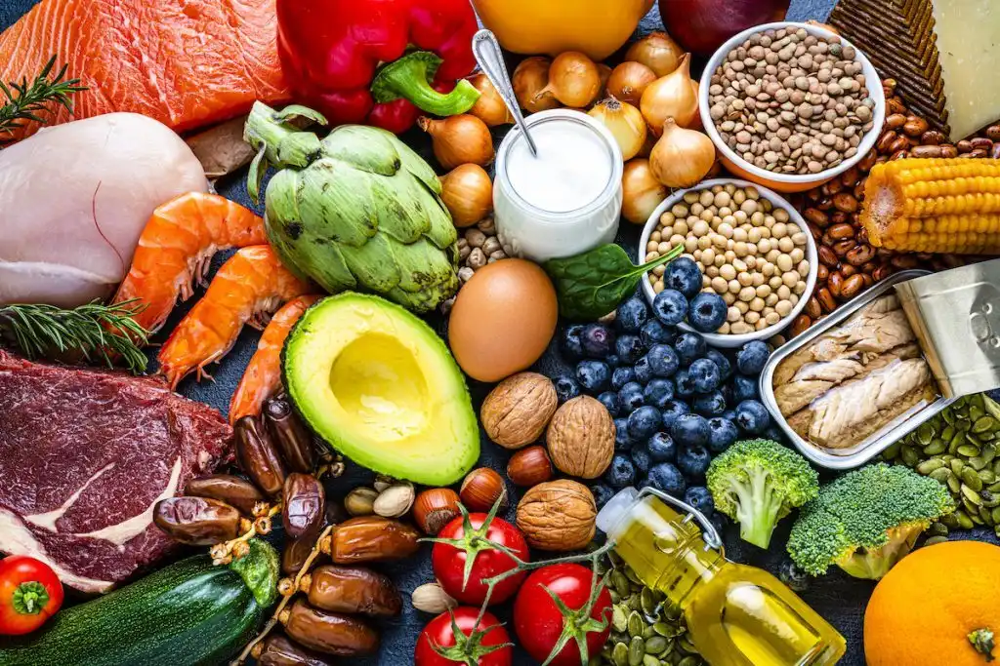

Strength training helps your body turn extra calories into muscle instead of fat. Even short workouts can be effective if done consistently.
Getting enough sleep allows your muscles to recover and grow. Poor sleep can slow down progress and reduce appetite.
Workout + Recovery Basics
You don’t need a complicated plan. Start with a few basic movements and slowly increase your effort.

Good Beginner Strength Exercises
- Squats or leg press
- Push-ups or bench press
- Rows or pull-downs
Weekly Routine (Simple)
- Choose 2–3 workout days each week
- Increase weights slowly over time
- Rest and eat properly after training